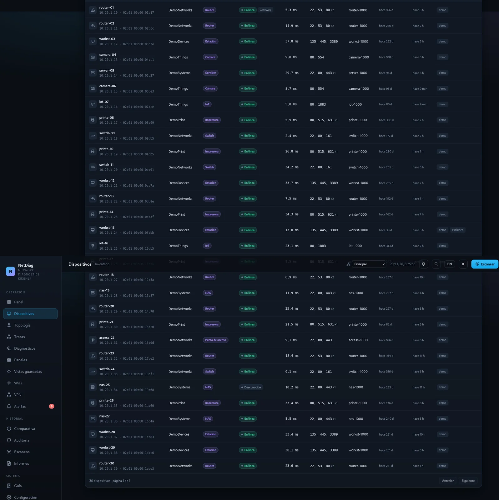
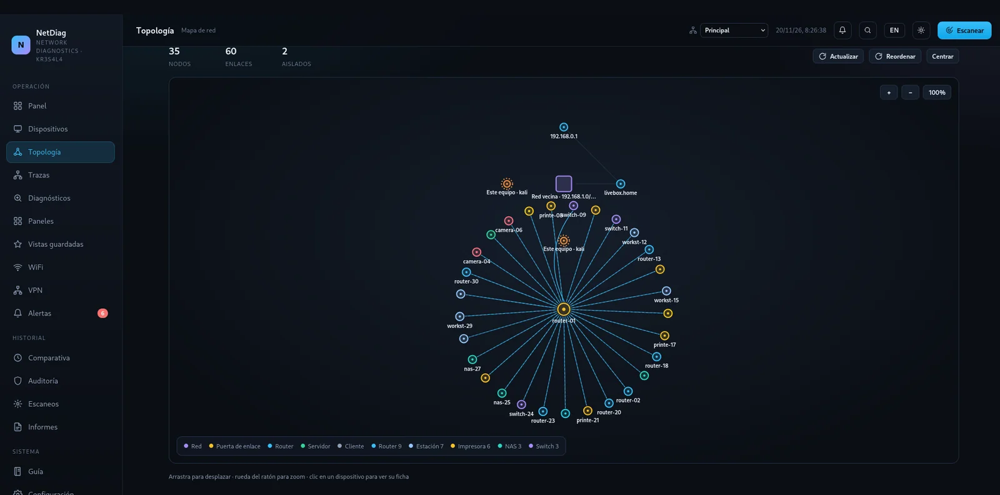
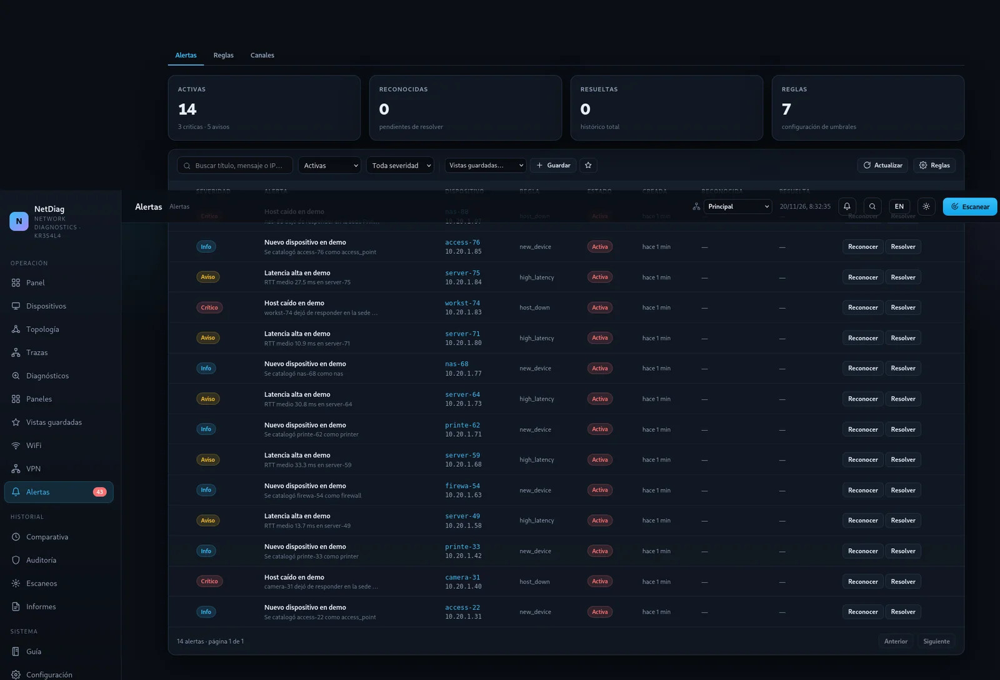

NetDiag
Inventario y diagnóstico de red en un binario. Sin telemetría, sin nube y sin servicios externos.
Idioma / Language: Español · English
← Volver al catálogo · Portafolio
Ficha del proyecto. Para ver el resto, vuelve al catálogo de proyectos.
Inventario y diagnóstico de red en un binario. Sin telemetría, sin nube y sin servicios externos.
Escáner de red y monitor de inventario self-hosted. Un único binario Go con interfaz web en español e inglés. No necesita agentes, servicios en la nube ni dependencias en tiempo de ejecución. Guarda todo en SQLite, en tu máquina. Funciona offline.
La idea es simple: descubrir, identificar, almacenar, vigilar, alertar e informar. Está pensado para redes propias, laboratorios y entornos autorizados.
Es beta y se entrega «tal cual», sin garantías. Úsalo solo en redes propias o con autorización explícita del propietario. Tú eliges qué se escanea y respondes por ello.
Los diagnósticos infieren de tablas e históricos. Son pistas para investigar, no una confirmación protocolaria de un ataque. La captura pasiva es opcional y solo guarda metadatos.







Capturas con datos de ejemplo.
Necesitas Go 1.27 o superior. Para ARP activo, también libpcap-dev y gcc.
git clone https://github.com/kr3s4l4/netdiag.git
cd netdiag
make build
./bin/netdiag serve # http://127.0.0.1:8080En el primer acceso se crea la cuenta de administrador. Después se elige la sede, se añade la subred a monitorizar y se lanza el primer escaneo. El asistente de arranque puede omitirse.
La configuración vive en ~/.config/netdiag/config.yaml y los datos en ~/.local/share/netdiag.
No hay telemetría. El binario no informa de nada a ningún servidor. Tú decides qué se guarda y qué se comparte.
.ndc: un ZIP con manifiesto, ficheros originales y firma minisign. La firma se verifica en local y usa una clave distinta de la de release.NetDiag es software libre bajo AGPL-3.0 y gratuito. No hay cuenta online, licencia online ni DRM. No hay soporte formal. La única cuenta es la de administrador local que se crea al arrancar.
Puedes usar, estudiar, modificar y redistribuir el programa. Si lo distribuyes, conserva los avisos de copyright y entrega la AGPL. Si ejecutas una versión modificada y la ofreces a otros usuarios a través de una red, la sección 13 de la AGPL exige ofrecerles el código fuente correspondiente. No hay cláusula de telemetría ni restricción de uso competitivo.
El binario sabe leer un fichero de licencia firmado con Ed25519. La comprobación es local: no contacta con ningún servidor. Es una capacidad técnica, sin servicios externos ni bloqueo. No activa funciones premium, no bloquea escaneos ni informes y nunca borra datos.
Las contribuciones se aceptan bajo DCO, sin CLA. Los avisos de dependencias de terceros están en NOTICE y THIRD_PARTY_LICENSES.md.
La última release publicada es v1.5.2. Incluye binarios para amd64 y arm64, SHA256SUMS, SBOM CycloneDX, atestación de procedencia y firma minisign con la clave pública c98b13d8c8f73259. Los hashes se pueden comprobar antes de ejecutar nada.
No hay SLA ni soporte formal. Los errores y las preguntas técnicas van a GitHub Issues. Las preguntas generales, a GitHub Discussions. Las vulnerabilidades se reportan por el canal privado descrito en SECURITY.md.
← Back to catalogue · Portfolio
Project page. For the rest of the work, go back to the project catalogue.
Network inventory and diagnostics in a single binary. No telemetry, no cloud and no external services.
A self-hosted network scanner and inventory monitor. A single Go binary with a web interface in Spanish and English. It needs no agents, cloud services or runtime dependencies. It stores everything in SQLite on your machine. It works offline.
The idea is simple: discover, identify, store, watch, alert and report. It is meant for your own networks, labs and authorised environments.
It is beta software and is provided "as is", without warranties. Use it only on networks you own or with the owner's explicit authorisation. You choose what gets scanned and you are responsible for it.
Diagnostics infer from tables and history. They are leads to investigate, not a formal confirmation of an attack. Passive capture is optional and stores metadata only.
Screenshots with sample data.
You need Go 1.27 or newer. For active ARP, you also need libpcap-dev and gcc.
git clone https://github.com/kr3s4l4/netdiag.git
cd netdiag
make build
./bin/netdiag serve # http://127.0.0.1:8080The administrator account is created on first access. Then choose a site, add the subnet to monitor and run the first scan. The setup wizard can be skipped.
Configuration lives in ~/.config/netdiag/config.yaml and data in ~/.local/share/netdiag.
No telemetry. The binary reports nothing to any server. You decide what is stored and what is shared.
.ndc containers: a ZIP with a manifest, original files and a minisign signature. The signature is verified locally and uses a key distinct from the release key.NetDiag is free software under AGPL-3.0 and free of charge. No online account, no online licence and no DRM. No formal support. The only account is the local administrator created on first start.
You can use, study, modify and redistribute the program. If you distribute it, keep the copyright notices and provide the AGPL. If you run a modified version and offer it to other users over a network, section 13 of the AGPL requires you to offer them the corresponding source code. There is no telemetry clause and no restriction on competitive use.
The binary can read a licence file signed with Ed25519. The check is local: it does not contact any server. It is a technical capability, with no external services or lock-in. It does not unlock premium features, does not block scans or reports and never deletes data.
Contributions are accepted under DCO, with no CLA. Third-party dependency notices are in NOTICE and THIRD_PARTY_LICENSES.md.
The latest published release is v1.5.2. It includes binaries for amd64 and arm64, SHA256SUMS, a CycloneDX SBOM, a provenance attestation and a minisign signature with public key c98b13d8c8f73259. Hashes can be checked before running anything.
There is no SLA or formal support. Bugs and technical questions go to GitHub Issues. General questions go to GitHub Discussions. Vulnerabilities are reported through the private channel described in SECURITY.md.